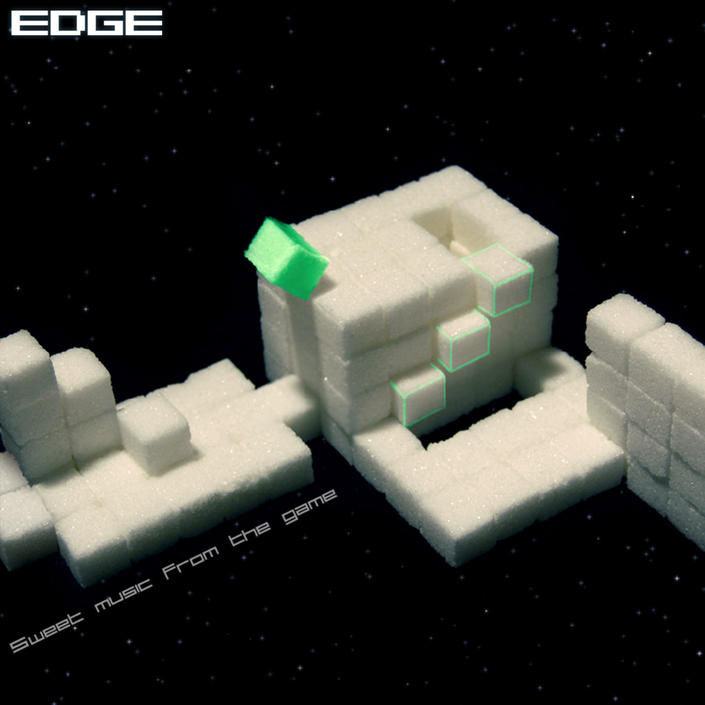

在线欣赏 | MP3 下载
作者：Simon Périn, Richard Malot, Jérémie Périn, Matthieu Malot, Romain Gauthier
曲目列表：
01. The Not So Cubic Title Music - by Romain Gauthier 00:57
02. Eternity - by Simon Perin 02:31
03. Quiet - by Richard Malot 02:13
04. The Shameful Last Minute Music - by Romain Gauthier 03:00
05. Pad - by Richard Malot 02:49
06. Duty - by Simon Perin & Romain Gauthier 03:34
07. Tec - by Richard Malot 01:10
08. Voyage Geometrique - by Simon & Jeremie Perin 02:12
09. Debrief - by Romain Gauthier 00:25
10. Kakkoi! - by Romain Gauthier 03:25
11. Mysterycube - by Romain Gauthier 01:47
12. Dark - by Richard Malot 01:23
13. Squadron - by Simon & Jeremie Perin 02:12
14. R2 - by Matthieu Malot 01:56
15. Jupiter - by Simon & Jeremie Perin 04:01
16. 8bits - by Simon & Jeremie Perin 04:19
17. Pixel - by Richard Malot 02:01
18. M zone - by Matthieu Malot 02:19
19. Extended Not So Cubic Title Music & Extended Debrief - by Romain Gauthier 03:09
在线欣赏 & 免费下载/购买 | MP3 下载 | FLAC 下载
01. Romain Gauthier - Kakkoii! 03:26
02. Romain Gauthier - Extended Not So Cubic Title Music & Extended Debrief 03:10
03. Simon Périn - Eternity 02:31
04. Richard Malot - Quiet 02:14
05. Romain Gauthier - The Shameful Last Minute Music 03:00
06. Richard Malot - Pad 02:49
07. Simon Perin & Romain Gauthier - Duty 03:34
08. Richard Malot - Tec 01:10
09. Simon & Jérémie Périn - Voyage Géométrique 02:12
10. Romain Gauthier - Debrief (game version) 00:25
11. Romain Gauthier - Mysterycube 01:47
12. Richard Malot - Dark 01:23
13. Simon & Jérémie Périn - Squadron 02:12
14. Matthieu Malot - R2 01:56
15. Simon & Jérémie Périn - Jupiter 04:01
16. Simon & Jérémie Périn - 8 Bit 04:19
17. Richard Malot - Pixel 02:01
18. Matthieu Malot - M Zone 02:20
19. Romain Gauthier - The Not So Cubic Title Music (game version) 00:57
你也可以通过安装 EDGE Soundtrack 来使用 500KB/s 的高清音质完美提升你的游戏体验！